Eighteen experiences that are genuinely hard to have anywhere else, each with the months it works and the reason it is worth the distance. Filter by how you want to spend the day.
Larapinta Trail · Kattastroffee1976 ·
CC BY-SA 4.0
All experiences
Showing all 18 experiences.
Ubirr, Kakadu · Bininj country
Rock art with the people who own it
Galleries painted, repainted and added to across twenty thousand years — x-ray barramundi, contact-era figures, and a thylacine last seen on the mainland three millennia ago. A Bininj guide turns a wall of pictures into a legal and ecological record.
May–SepHalf day
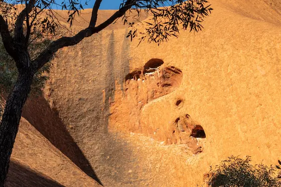
Uluru · Anangu country
The base walk at first light
10.6 kilometres around the rock, flat, three to four hours. Doing it at dawn is not about photographs — it is the only time the scale resolves, because you can hear the place. Several sections are sacred sites where photography is asked against; the signs mean it.
May–Sep10.6 km
Ningaloo, Western Australia
Swim with whale sharks
They arrive after the March coral spawn and stay through July, feeding along the reef edge. Spotter planes find them, you get in ahead of them, and a licensed operator holds the legal separation distance. The largest fish alive, moving past at walking pace.
Mar–JulFull day
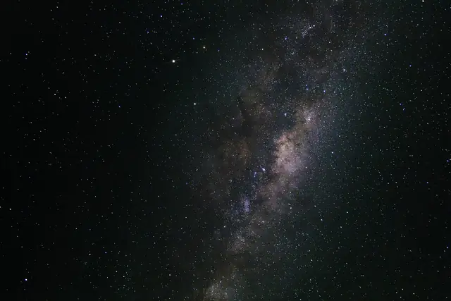
Anywhere past the last town
See the galactic core
The centre of our galaxy passes overhead in the southern winter, and inland Australia holds some of the darkest remaining sky on Earth. The Emu in the Sky — read in the dust lanes between stars rather than in the stars — is among the oldest astronomies still in use.
May–SepOne night
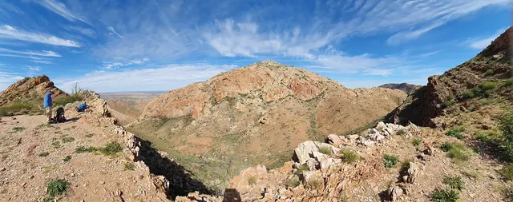
West MacDonnell Ranges · Arrernte country
Walk the Larapinta Trail
223 kilometres in twelve sections, ending on Mount Sonder for sunrise. Section 12 alone is a hard day-walk from Alice Springs. Between November and March the trail is genuinely dangerous; people have died of heat on it.
May–Aug1–14 days
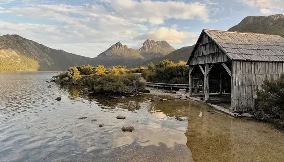
Cradle Mountain–Lake St Clair, Tasmania
The Overland Track
65 kilometres over six days through button grass, myrtle beech and dolerite. Bookings, a fee and one-way travel are enforced October to May, which is exactly why it still feels remote. Expect all four seasons in a day and pack for the worst of them.
Oct–May6 days
Ribbon Reefs, Queensland
Dive the outer reef
The inshore reefs took the worst of the bleaching; the outer ribbons and the Coral Sea are still extraordinary. Go on a liveaboard rather than a day boat — three days out means you dive sites the day fleet cannot reach.
Jun–Oct3 days
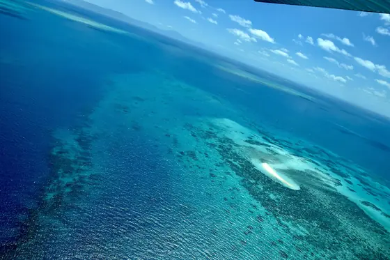
Great Barrier Reef, Queensland
Night-dive the coral spawn
One or two nights after the November full moon, hundreds of coral species release eggs and sperm simultaneously in a single synchronised event visible from the surface. It is the largest reproductive event on the planet and it lasts about an hour.
Nov, post-full moonOne night
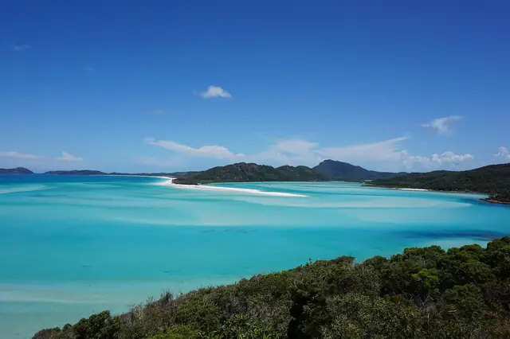
Whitsundays · Ngaro sea country
Three days under sail
74 islands, and the only sane way through them is on a boat you sleep on. Whitehaven's sand is 98% silica — too pure for glassmaking, cool underfoot at forty degrees, and it squeaks. Anchor at Hill Inlet and swim before the day boats arrive.
Jun–Oct3 days
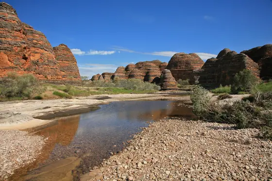
Purnululu · Gija country
Cathedral Gorge
A natural amphitheatre inside the domes with acoustics people fly in to sing in. Getting there is 53 kilometres of rough 4WD off the highway, two to three hours each way, and the park is only open April to October.
Apr–Oct4WD only
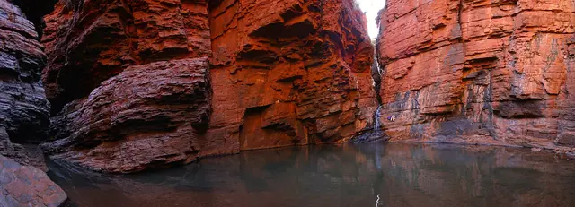
Karijini · Banyjima country
Climb down to Handrail Pool
Weano Gorge narrows until you are edging along a ledge with one hand on an iron rail, and then it opens into cold green water two and a half billion years below the plateau. Graded Class 5; go with a guide unless you are certain.
May–SepClass 5
larapuna / Bay of Fires · palawa country
The wukalina Walk
Four days along the north-east coast, owned and guided by the palawa community — the first Aboriginal-owned and operated walk in Tasmania. The orange on the boulders is lichen; the name came from Furneaux in 1773, who saw the fires burning.
Oct–Apr4 days
Daintree · Kuku Yalanji country
Walk the oldest rainforest with its custodians
Around 180 million years of continuous forest, holding flowering-plant lineages near the base of the entire family tree. With a Kuku Yalanji guide it stops being scenery: this plant is food, that one is medicine, this one will put you in hospital.
Jun–OctHalf day
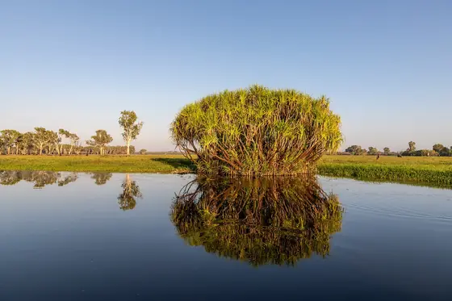
Yellow Water, Kakadu
The dawn billabong cruise
By late Dry the floodplain has shrunk to a few channels and everything that needs water is standing in them: jabiru, magpie geese in the tens of thousands, sea eagles, and saltwater crocodiles at a density that recalibrates your sense of the word "river".
Jun–Sep2 hours
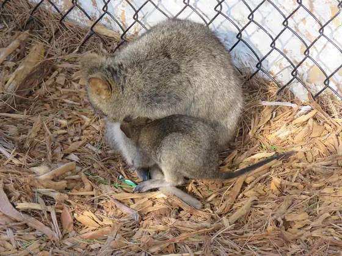
Wadjemup / Rottnest Island, WA
Cycle an island with no cars
Nineteen kilometres off Fremantle, no private vehicles, and around ten thousand quokkas that have no reason to fear you. Wadjemup is also a former Aboriginal prison island — the museum tells that history, and it is the more important half of the visit.
Year-roundDay trip
Cape Byron · Arakwal country
Watch the humpback migration
The most easterly point of the mainland, which puts you closer to the migration route than anywhere else on the east coast. Around forty thousand humpbacks now pass — north from June, south with calves from September. The population has recovered from near-extinction.
Jun–NovFree
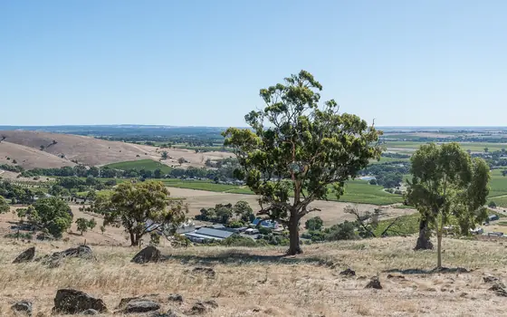
Barossa Valley, South Australia
Drink from pre-phylloxera vines
Phylloxera never reached South Australia, so some Barossa Shiraz still comes off ungrafted vines planted in the 1840s — among the oldest continuously producing wine vines anywhere on Earth. Harvest is February and March; the cellar doors are open year-round.
Feb–AprBook ahead
Kangaroo Island, South Australia
Watch a burnt island come back
Roughly half of Kangaroo Island burned in the 2019–20 fires, including most of the habitat of the endangered glossy black-cockatoo. Going now means seeing regeneration at work — epicormic growth, returning wildlife, and a rebuilt visitor economy that needs it.
Sep–May2–3 days
Nothing in that category yet.
We only list experiences we can describe honestly, with a real season attached. Try another filter, or ask us what you are actually looking for.